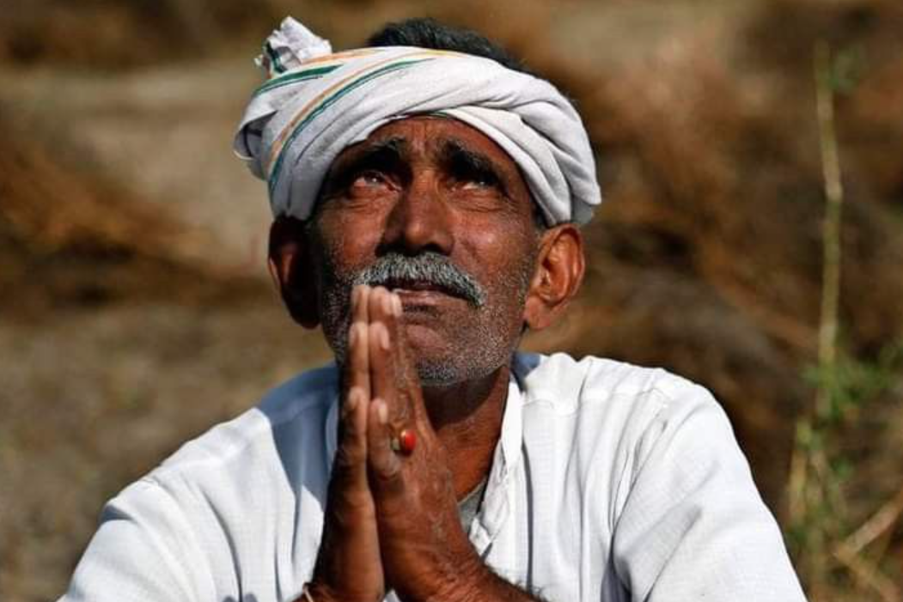
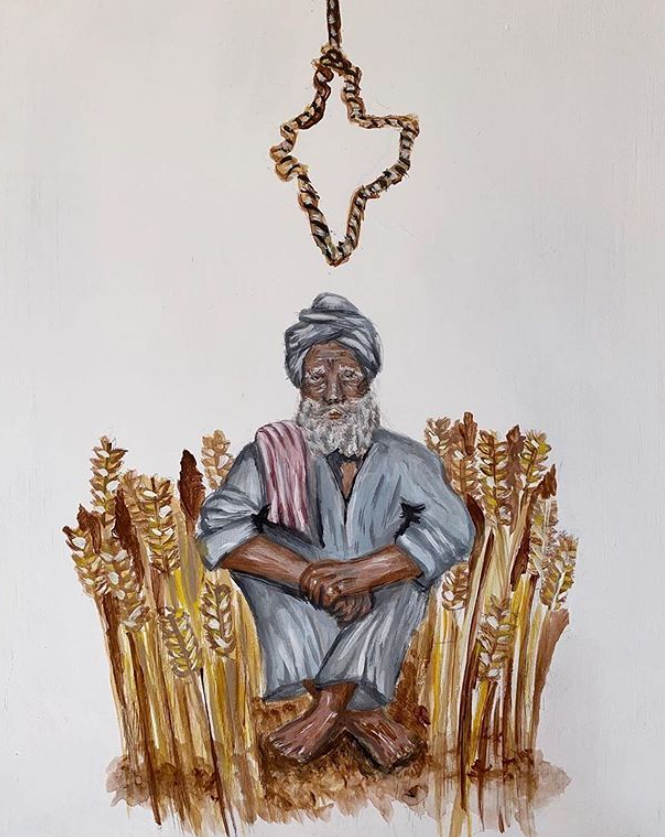
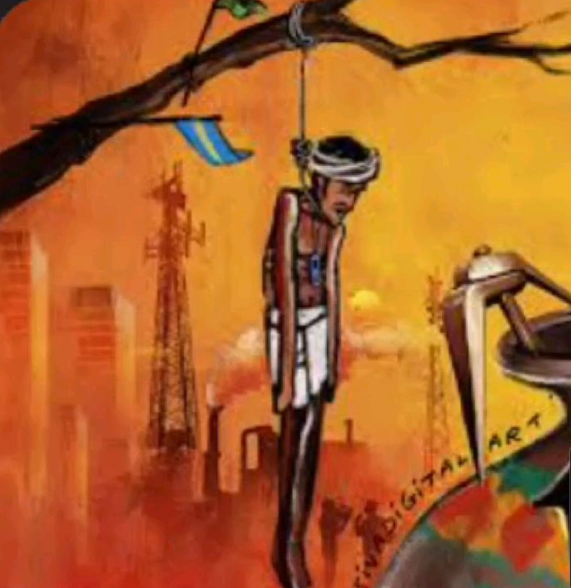
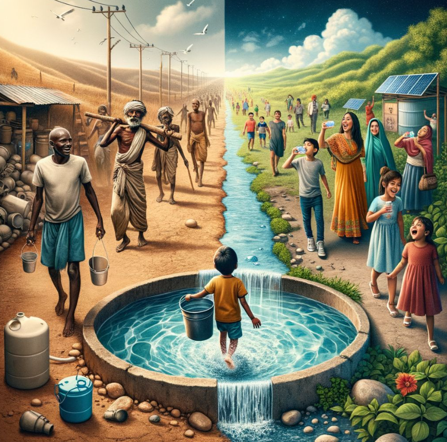
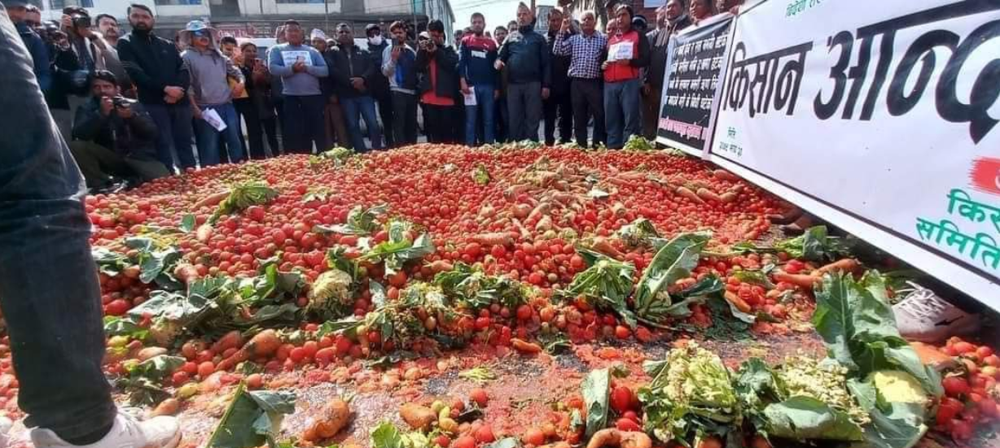

Behind the food that feeds the world lies a story of struggle, uncertainty, and resilience. Farmers face climate change, water shortages, financial stress, and unstable markets.

Farmers rely heavily on rainfall and weather conditions. Erratic monsoons, droughts, and extreme heat can destroy crops. Climate change is increasingly disrupting agricultural cycles, reducing yields and making farming more unpredictable.
Many farmers borrow money to buy seeds, fertilizers, and equipment. When crops fail, they struggle to repay loans and fall into debt traps. Financial pressure is one of the biggest reasons behind farmer distress.


In extreme cases, economic hardship and crop failures lead to tragic outcomes. Thousands of farmers lose their lives every year due to financial stress, climate shocks, and unstable agricultural income.
Water scarcity has become one of the biggest threats to agriculture. Groundwater depletion, droughts, and unpredictable rainfall make irrigation difficult and reduce crop productivity.


Even when farmers produce good harvests, they often receive very low prices for their crops. Without proper storage or government support, they are sometimes forced to sell produce below cost.
This documentary explains the causes behind farmer suicides in India, including climate change, debt, crop failure, and unstable market prices.
Several programs and resources exist to support farmers and help them recover from financial and environmental challenges.